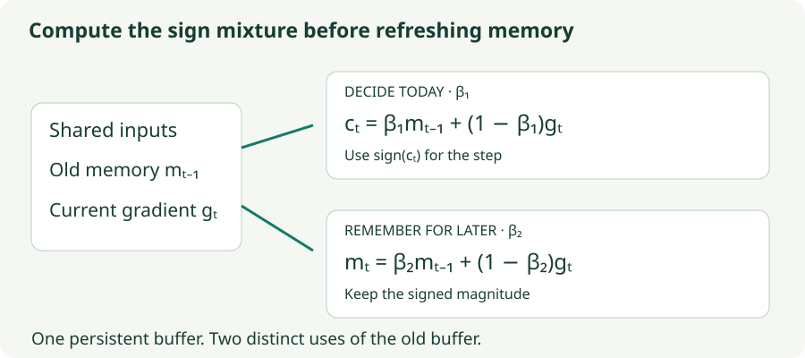

Lion: A Small State and a Sign Update
Jump to the loss-contour trajectory demo ↓
Separate the two momentum coefficients, inspect sign changes, and understand update size and weight decay.
Lion keeps one signed momentum buffer and uses the sign of a filtered gradient to update each coordinate. There is no squared-gradient buffer and no RMS denominator. Its simplicity makes two details especially important: the two beta coefficients do different jobs, and the update mixture must be formed before the stored memory is refreshed.
The name comes from EvoLved Sign Momentum. The algorithm was found through the program-search process described in Symbolic Discovery of Optimization Algorithms. To use it intelligently, we still need to understand the resulting recurrence.
1. One stored memory, two mixtures
Initialize $m_0=0$. At each step, compute the current gradient $g_t$ at $w_{t-1}$, then
The sign function returns $+1$ for positive inputs, $-1$ for negative inputs, and 0 at exactly zero, independently in each coordinate. The temporary $c_t$ chooses today’s direction. The persistent $m_t$ supplies memory for future steps. Weight decay $\lambda$ is applied separately from this direction.
$\beta_1$ controls how much the old memory influences today’s decision. $\beta_2$ controls how quickly the stored history changes. They are not first- and second-moment coefficients as in Adam: both operate on signed gradients, and there is no second-moment estimate.

2. A small reversal need not reverse the update
Use one coordinate, $m_0=0$, $\beta_1=0.9$, $\beta_2=0.99$, learning rate $\eta=0.1$, and no weight decay. Supply gradients $2$, $-0.1$, then $-0.3$.
| Step | $g_t$ | Old $m$ | Mixture $c_t$ | Displacement | New $m$ |
|---|---|---|---|---|---|
| 1 | 2 | 0 | 0.2 | −0.1 | 0.02 |
| 2 | −0.1 | 0.02 | 0.008 | −0.1 | 0.0188 |
| 3 | −0.3 | 0.0188 | −0.01308 | +0.1 | 0.015612 |
At step 2, the direction mixture is $0.9(0.02)+0.1(-0.1)=0.008$, still positive. The parameter therefore moves downward even though the newest gradient is negative. The stored history becomes $0.99(0.02)+0.01(-0.1)=0.0188$.
At step 3, the stronger negative gradient makes the temporary mixture negative, so the update reverses. Yet the slower stored memory remains positive. This is exactly why it helps to show $c_t$ and $m_t$ separately.
For positive old memory and $\beta_1<1$, the current direction flips only when $g_t<-\beta_1m_{t-1}/(1-\beta_1)$. At step 2 that threshold is $-0.18$; $-0.1$ is not enough. The sign rule is not simply “follow the sign of the latest gradient.”
3. What sign removes—and what it preserves
After the mixture is formed, its magnitude is discarded. A positive component of $0.001$ and a positive component of $100$ both produce a displacement of $-\eta$, before weight decay. But gradient magnitudes still matter before the sign: they determine the mixture and the next momentum buffer.
If $k$ components of $c_t$ are nonzero, the sign contribution has Euclidean norm $\eta\sqrt{k}$. That makes the overall step scale depend on the number of active coordinates. Weight decay adds another component to the displacement, so the formula does not describe the norm of the total update when decay is enabled.
A constant learning rate also gives a finite movement even for a tiny nonzero mixture. On a one-dimensional quadratic with no momentum, sign descent can alternate across the optimum instead of settling exactly at it. Reducing the learning rate reduces that oscillation scale. A schedule remains relevant even though the optimizer has no denominator.
4. Lab: separate the decision from the stored memory
This uses the shared quadratic dataset. The readout shows the latest gradient, the temporary mixture used for the sign, and the momentum stored after the step. The curve is excess task loss; it excludes any regularization term when you enable weight decay.
Lion: parameter path and loss by iteration
At zero weight decay, every nonzero mixture coordinate moves by exactly the learning rate in magnitude. Inspect the displacement to verify this.
- Inspect the step size: set $\lambda=0$ and take several steps. Each displacement component is $-\eta$, 0, or $+\eta$ even when gradient magnitudes differ substantially.
- Remove today’s memory influence: set $\beta_1=0$. The direction follows the current gradient sign, although $m$ continues updating if $\beta_2$ is nonzero.
- Change the stored timescale: compare $\beta_2=0.5$ and $0.99$ while holding $\beta_1$ fixed. The future sign decisions now receive different histories.
- Approach the optimum: use the full gradient and compare learning rates 0.04 and 0.01. Inspect the residual wandering rather than expecting every nonzero gradient to produce an arbitrarily small step.
5. Why there is no Adam-style correction
For a constant gradient, the stored EMA still begins below its long-run value: $m_t=(1-\beta_2^t)g$. Lion does not divide it by that factor. The sign of an isolated positive rescaling is unchanged, but $c_t$ mixes old memory with a fresh gradient.
Correcting only the old memory before that mixture would change its relative weight against the current gradient and can change the sign decision. It would therefore define a different algorithm. Do not add Adam’s bias correction merely because both methods contain an EMA.
Similarly, replacing the final sign with normalization by a vector norm changes the geometry. A global normalization preserves coordinate ratios; Lion assigns equal nonzero coordinate magnitudes. Its update is also coordinate-dependent: rotating a parameterization can change which signs are taken.
6. Preserve the update order
# m is the only persistent moment buffer.
# Compute direction using the OLD m.
mixture = beta1 * m + (1 - beta1) * grad
parameter *= 1 - lr * weight_decay
parameter -= lr * mixture.sign()
# Only now replace the stored history.
m = beta2 * m + (1 - beta2) * gradIn an in-place implementation, keep the temporary mixture separate from the persistent buffer until the sign is computed. Overwriting $m$ with the beta-two update first changes today’s mixture. Applying sign to $m$ in place would also destroy the magnitudes needed by future memory updates.
Lion stores one moment scalar per parameter, compared with Adam’s two. This reduces optimizer state; it does not halve the entire training memory footprint, which also includes weights, gradients, activations, precision-related copies, and other buffers. Ordinary floating-point gradients still need to be computed and communicated unless a separate compression scheme is introduced.
7. Learning rate and decay travel together
Lion’s sign step can have a different norm from Adam’s normalized-moment step. Copying an Adam learning rate without checking update sizes is therefore a poor comparison. The original work reports using smaller Lion learning rates than AdamW in its experiments; that is empirical guidance, not an identity between the algorithms.
Decoupled decay shrinks weights by $1-\eta\lambda$ per step. If you reduce $\eta$ while leaving $\lambda$ fixed, you also reduce the per-step shrinkage. Holding the product $\eta\lambda$ fixed preserves that particular decay factor, but does not make the full training dynamics equivalent. The schedule and number of steps matter as well.
A meaningful comparison records the learning-rate schedule, beta values, decay groups, batch size, training budget, update norms, and validation outcome. There is no single toy experiment that ranks Lion against Adam, momentum, or matrix methods for all neural networks.
8. Questions worth answering
No. Magnitudes affect the temporary mixture and the stored momentum. Only the final mixture’s magnitude is discarded when choosing the sign step.
Existing nonzero momentum can still produce a nonzero sign mixture when $\beta_1>0$. The stored momentum decays but may keep its sign, so finite steps can continue. This is different from basic RMSprop, which directly multiplies the current gradient.
No. One chooses the current sign mixture; the other determines the history supplied to later steps. The worked reversal demonstrates that those quantities can even have different signs.
No. Lion takes signs of individual coordinates. Muon’s idealized transform normalizes singular directions of a matrix. Entry-wise signs and singular-value normalization generally produce different maps.
9. Reconnect the series
SGD chooses a scalar step scale. Momentum adds directional memory. RMSprop, Adadelta, and Adam adapt coordinate scales using history. Muon reshapes a matrix update’s singular directions. Shampoo maintains structured row and column preconditioners; SOAP uses their directions as a basis for Adam. Lion keeps directional history but quantizes the final coordinate decisions to signs.
These methods answer different questions about what information to retain and how to measure a useful step. Use the series guide to revisit the specific mechanism you want to understand, and compare implementations with their conventions and costs visible.
Sources
Chen et al., Symbolic Discovery of Optimization Algorithms; Google Research’s Lion implementation. The recurrence audit, reversal example, and interactive trajectory are original explanatory material.